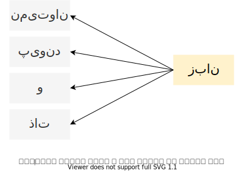

تنظیمات
تعدادی از کلمات به صورت تصادفی انتخاب و بردار متناظر با آن ها در نمودار نمایش داده می شود. حداکثر ۵۰۰۰ کلمه
کلمات دلخواه خود را در کادر زیر بنویسید. در صورت موجود بودن در داده ها با رنگ دیگری نمایش داده می شوند.کلمات را با فاصله از هم جدا کنید.
روش تولید بردار واژگان
ابعاد فضا
روش کاهش ابعاد بردار های واژگان بمنظور مصورنمایی
نمایش کلمات در کنار نقاط باعث افزایش زمان موردنیاز برای تولید نمودار می شود. در حالت نمایش نقاط هم می توانید با بردن موس روی هر نقطه، کلمه متناظر را ببینید.
این صفحه حاوی نتایج تعدادی روش برای تولید بردارهای واژگان فارسی است. برای تولید بردار ها از یک میلیون و ۱۰۰ هزار مقاله ویکیپدیای فارسی به عنوان پیکره متنی استفاده شده است. توسط هر کدام از مدل ها برای هر کلمه برداری به طول ۱۰۰ ایجاد و بعد از کاهش ابعاد در فضاهای دو بعدی و سه بعدی ترسیم شده است. همانطور که در نمودار بالا می بینید در فضای برداری حاصل، نقاط نزدیک به هم اغلب نشان دهنده لغاتی با معنی یا موضوع مشابه هستند.
یکی از مدل های معروف برای تولید بردار کلمات روش Continuous Bag of Word یا به اختصار CBOW است. در این روش مدلی برای پیشبینی یک کلمه براساس لغات همسایه آن آموزش داده می شود.
یکی دیگر از مدل های پراستفاده برای این کار مدل Skip-Gram است. این مدل برعکس مدل CBOW از یک کلمه برای پیشبینی کلمات همسایه آن استفاده می کند.
